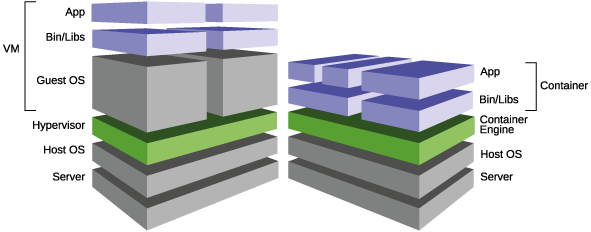
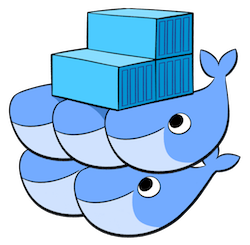

WordPress Meetup Milano
Hosted by MotorK Italia Srl
Docker e WordPress:
un matrimonio che s'ha da fare
Salvatore Cordiano
parallelit
¡Hola!
Salvatore Cordiano
Full stack Web Developer
Agenda
- Introduzione a Docker
- Primi passi con Docker
- docker-compose
- Demo
Introduzione a


Docker è un progetto open-source che ha lo scopo di rendere più facile la creazione, il deployment e l'esecuzione di applicazioni utilizzando i Container
I container nascono dall'idea di virtualizzare una "piccola parte" di una macchina

I container sono isolati ma possono condividere OS, bin e library
Docker utilizza le funzionalità di isolamento delle risorse del kernel Linux come i namespaces per consentire ai container di coesistere in modo indipendente sulla stessa istanza di Linux

I vantaggi immediati dell'utilizzo dei container sono l'aumento delle prestazioni e la riduzione dell'ingombro dell'applicazione
Docker ci consente il deploy in qualsiasi ambiente di esecuzione, senza doversi preoccupare delle condizioni di eseguibilità
Runtime in conflitto
Es. eseguire differenti versioni di PHP/Python stessa macchina
Es. non dobbiamo installare le dipendenze o librerie in locale
Mapping di porte e servizi
Es. rimappare più processi httpd in ascolto sulla porta 80 su porte diverse
Allineare la configurazione degli ambienti di sviluppo, test e produzione
- Isolamento tra progetti che usano gli stessi servizi (versione, configurazione, dati, etc.)
- Facilità a mantenere allineate le versioni dei servizi sui vari ambienti
- Condivisione e versioning degli ambienti di sviluppo
Primi passi con Docker
docker.com > Get Docker
 Linux
Linux
 Mac
Mac
 Windows
Windows
Verifichiamo se Docker è installato
$ docker --version
Docker version 1.13.1, build 092cba3
$ docker-machine --version
docker-machine version 0.9.0, build 15fd4c7
Verifichiamo se Docker Compose è installato
$ docker-compose --version
docker-compose version 1.11.1, build 7c5d5e4
Container
Un container è un'istanza di una immagine in esecuzione
Immagine
E' un template per creare l'ambiente desiderato
Immagine
Viene definita attraverso un file di testo chiamato Dockerfile che contiene gli step necessari per creare l'immagine
# Dockerfile
FROM ubuntu:16.04
RUN apt-get update && apt-get install -y nodejs npm
RUN ln -s /usr/bin/nodejs /usr/bin/node
Docker Hub
hub.docker.com
Es. immagini PHP pronte all'uso (sintassi image_name:version)
php:7.1.1-apache
php:7.1-apache
php:7-apache
php:7.1.1-fpm
php:7.1-fpm
php:7-fpm
php:5.6.30-apache
php:5.6-apache
php:5.6.30-fpm
php:5.6-fpm
docker search
$ docker search php
NAME DESCRIPTION STARS OFFICIAL AUTOMATED
php While designed for web development, the PH... 2033 [OK]
richarvey/nginx-php-fpm Container running Nginx + PHP-FPM capable ... 343 [OK]
phpmyadmin/phpmyadmin A web interface for MySQL and MariaDB. 264 [OK]
eboraas/apache-php PHP5 on Apache (with SSL support), built o... 118 [OK]
...
docker pull
$ docker pull hello-world
Using default tag: latest
latest: Pulling from library/hello-world
78445dd45222: Pull complete
Digest: sha256:c5515758d4c5e1e838e9cd307f6c6a0d620b5e07e6f927b07d05f6d12a1ac8d7
Status: Downloaded newer image for hello-world:latest
docker run
Docker Hello World
$ docker run hello-world
PHP 7.1.1 con Apache
$ docker run -p 80:80 -v $(pwd)/www:/var/www/html php:7.1.1-apache
docker ps
$ docker ps
CONTAINER ID IMAGE COMMAND CREATED STATUS PORTS NAMES
185bb506324c php:7.1.1-apache "docker-php-entryp..." 5 seconds ago Up 4 seconds 0.0.0.0:80->80/tcp unruffled_mestorf
Container stop
Lo stop del container avviene quando usiamo il comando docker stop oppure quando il processo principale termina
docker images
$ docker images
REPOSITORY TAG IMAGE ID CREATED SIZE
php 7.1.1-apache 399dbfe34f35 2 weeks ago 386 MB
casper latest e5c8990c2631 2 weeks ago 470 MB
ubuntu 14.04 b969ab9f929b 2 weeks ago 188 MB
hello-world latest 48b5124b2768 2 weeks ago 1.84 kB
ubuntu 16.04 104bec311bcd 2 weeks ago 129 MB
redis latest d59dc9e6d0bf 2 weeks ago 183 MB
mysql 5.7 594dc21de8de 2 weeks ago 400 MB
docker exec
Il container deve essere runnning
$ docker exec -ti container_name bash
Docker & WordPress
Run WordPress
$ docker run -p 80:80 -v $(pwd)/www:/var/www/html wordpress
docker-compose
# docker-compose.yml
version: '2'
services:
wordpress:
image: wordpress:latest
links:
- mariadb:mysql
environment:
- WORDPRESS_DB_PASSWORD=password
ports:
- "127.0.0.1:80:80"
volumes:
- ./html:/var/www/html
mariadb:
image: mariadb:latest
environment:
- MYSQL_ROOT_PASSWORD=password
- MYSQL_DATABASE=wordpress
volumes:
- ./database:/var/lib/mysql
Per avviare i container
$ docker-compose up -d
Per fermare i container
$ docker-compose down